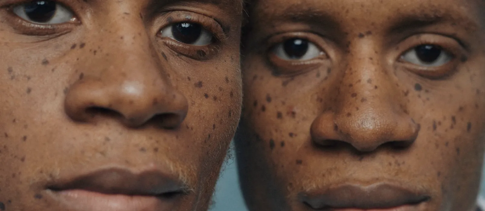

Identity verification
Recognition that knows when to say “not sure.”
Fairview confirms a match when it is confident and flags unclear images, close lookalikes and possible spoofs for review.
Verification outcomes
Match confirmed
The face clearly belongs to one enrolled person, with no close lookalike.
Needs review
The image is unclear, or two people look too alike. A person decides.
No match
The face is not similar to anyone who has been enrolled.
Possible spoof
The camera may be seeing a photo or a screen.
Where it fits
Fair by design
Fairview uses the same rules for everyone and never looks at race or skin tone.
At a glance
- Employees enrolled
- –
- Decisions recorded
- –
- System
- –
Getting started
Live verification
Names someone only when it’s sure.
Review queue
Faces the system wasn’t sure about. Check the person, then record what you found.
Nothing to review
When the system can’t be sure about a face, the case appears here for a person to decide.
Employees
Enroll staff, then check them in over their first week.
- Day 1Enroll
- Day 2Check in
- Day 3Check in
- Day 4Check in
- Day 5Onboarded
Enroll or check in
Employees
No employees enrolled yet
Start the camera and enroll the first employee. Anyone who isn’t enrolled is treated as a visitor.
Lookalike test
Two people who look alike, side by side.
When two people look this alike, Fairview asks a person to decide.

1Choose person A
Or add person A now
2Choose person B
Or add person B now
3Test live
Try changing the lighting, turning your head or covering part of your face, and watch the two scores move.
Run a simulation Test thousands of generated lookalike pairs without a camera
Results appear here.
Engine comparison
The same camera feed, judged by both systems.
Conventional system
Always names the closest face.
Fairview
Names someone only when it’s sure.
Fairness report
Mistakes by group, compared with a conventional system.
Based on simulated data.
01Summary
02By group
03What-if settings
Detailed metrics Review rates, every metric, threshold curves, lookalikes and calibration
Real-world reference data How a conventional system performs on Racial Faces in the Wild data
Activity log
Review recorded decisions and check the integrity of the log.
| Time | Outcome | Person | Details | Match score | Quality | Liveness |
|---|